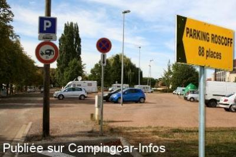
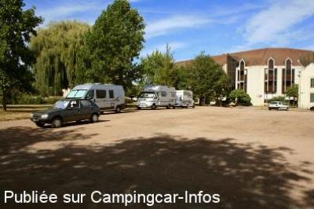
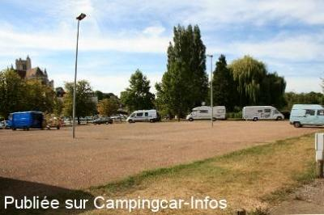

APN = Parking toléré jour/nuit de :
AUXERRE
(N° 538)
Accès/adresse :
Rue Saint Martin les Saint-Marien
Parking Roscoff
89000 AUXERRE
Parking Roscoff
89000 AUXERRE
Latitude : (Nord) 47.79761° Décimaux ou 47° 47′ 51′′
Longitude : (Est) 3.57741° Décimaux ou 3° 34′ 38′′
Tarif : Gratuit
Services :
Autres informations :
Parking à partager avec les voitures
http://www.ot-auxerre.fr/emplacements-pour-les-camping-cars_fr_52.html

Le 13/09/2012 par Philippe 89

Le 13/09/2012 par Philippe 89

Le 13/09/2012 par Philippe 89
de
léolulu05
le 08/10/2015 :
passage le 02/10/2015
nous avons stationné 1 nuit sur ce parking, une dizaine de CC et quelques voitures,mais aucun problème pour stationner gratuitement.
Pas très loin de la ville en bordure du port et surtout une magnifique vue sur les églises ou cathédrales illuminées le soir .
Accès très facile et calme assuré.
passage le 02/10/2015
nous avons stationné 1 nuit sur ce parking, une dizaine de CC et quelques voitures,mais aucun problème pour stationner gratuitement.
Pas très loin de la ville en bordure du port et surtout une magnifique vue sur les églises ou cathédrales illuminées le soir .
Accès très facile et calme assuré.
de
Christiane 73
le 27/07/2014 :
Nous avons également passé deux nuits sur ce parking, fin Mai 2014, ce qui nous a permis de découvrir la
ville (très agréable) et ses trésors!
Nous avons également passé deux nuits sur ce parking, fin Mai 2014, ce qui nous a permis de découvrir la
ville (très agréable) et ses trésors!
de
Solange
le 09/09/2013 :
Passée 2 nuits en septembre 2013. C est vrai qu on le partage avec les voitures, mais les priviliègés seront au bord du parc ou en bordure du port de plaisance, passerelle pour aller au centre ville, belle situation pour les commerces et visites. Simple parking sans services. Services au camping pour 2,90 euros
Passée 2 nuits en septembre 2013. C est vrai qu on le partage avec les voitures, mais les priviliègés seront au bord du parc ou en bordure du port de plaisance, passerelle pour aller au centre ville, belle situation pour les commerces et visites. Simple parking sans services. Services au camping pour 2,90 euros
de
Philippe 89
le 03/09/2012 :
Je confirme, la ville d'Auxerre n'accueille pas les camping cars. Seul le parking ROSCOFF permet de stationner loin des commerces, sans aucun service. La ville d'Auxerre est à éviter comme escale.
Tout près les communes de GURGY et de CHABLIS accueillent les Camping-cars à bras ouverts...
Je confirme, la ville d'Auxerre n'accueille pas les camping cars. Seul le parking ROSCOFF permet de stationner loin des commerces, sans aucun service. La ville d'Auxerre est à éviter comme escale.
Tout près les communes de GURGY et de CHABLIS accueillent les Camping-cars à bras ouverts...
de
willy en Chris
le 01/09/2007 :
Mooie plaats in centrum van Auxerre - langs de Yonne - één nachtje gebleven - gratis - wandelmogelijkheden langs water en/of stad -
Mooie plaats in centrum van Auxerre - langs de Yonne - één nachtje gebleven - gratis - wandelmogelijkheden langs water en/of stad -